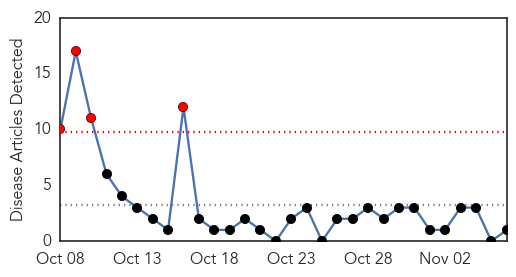
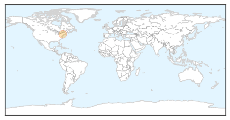

Dengue Fever
30-Day Web Trend
0 alerts, 0 warnings
30-Day Twitter Trend
3 alerts, 3 warnings

Article Locations

Article Confidences

Top Articles:
- 0.999
- Dengue Fever Outbreak Hits Hawaii — Will It Last?
- 0.994
- 107 cases of dengue fever confirmed on Hawaii Island
- 0.991
- How to cope with Dengue Fever in Southern Africa
- 0.989
- Confirmed cases of dengue fever rises to 19 on Hawaii Island
- 0.978
- At 381 cases, dengue touches a four-year high in Gurgaon
- 0.941
- Kalama Valley residents warned of potential dengue case
- 0.909
- Sr citizen 9th victim of dengue this year
- 0.898
- Philippines dengue: Cases up more than 100% in Ilocos Region
- 0.833
- Hookena Beach Park remains closed; confirmed case count reaches 19
- 0.818
- ‘No deaths from viral fevers’
- 0.709
- New funding boosts research for controlling TB, malaria, dengue and leishmaniasis
- 0.699
- Pakistan Christian Post
- 0.658
- Mysterious fever takes student’s life
- 0.637
- Health department confirms dengue fever case in East Oahu
- 0.598
- Climate change growing threat to health
- 0.556
- Pvt hospitals to display rate chart
Top Tweets:
-
No tweets found for Nov 06, 2015
Measles
30-Day Web Trend
4 alerts, 0 warnings

30-Day Twitter Trend
0 alerts, 0 warnings

Article Locations
Article Confidences

Top Articles:
Top Tweets:
-
No tweets found for Nov 06, 2015